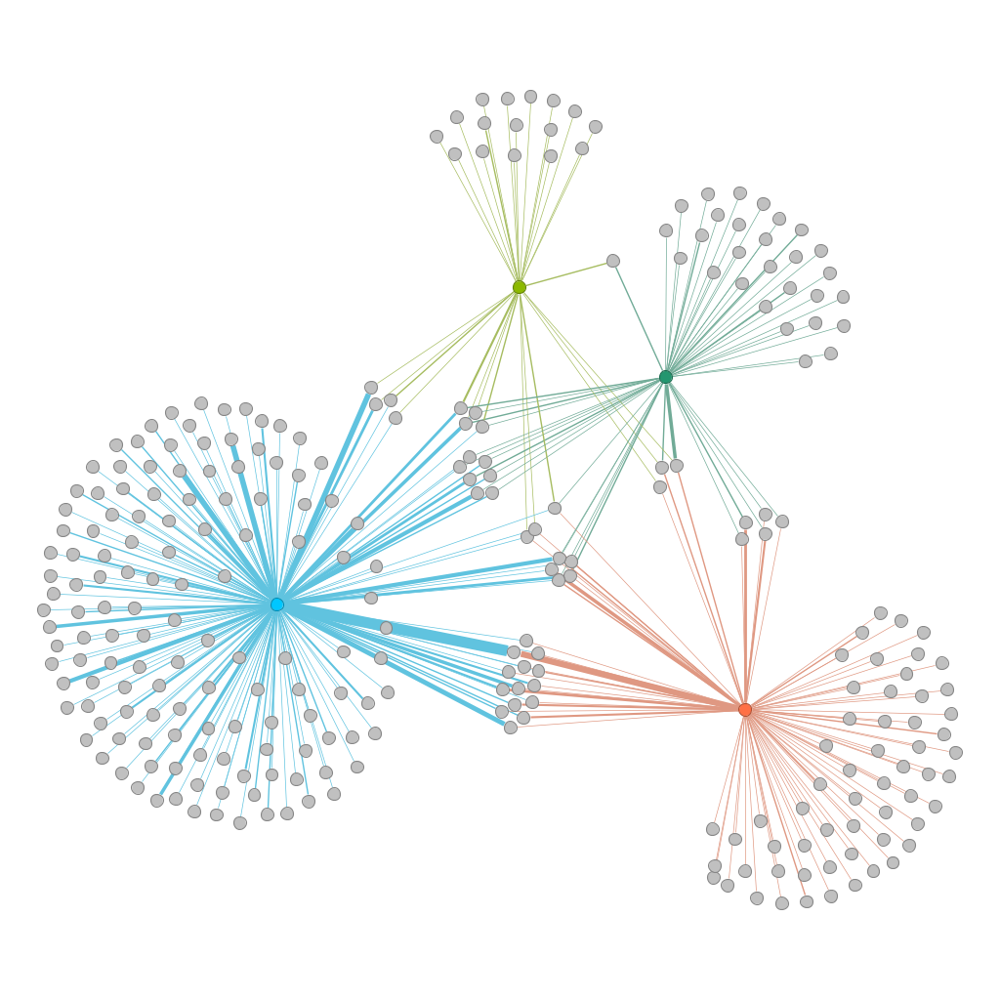
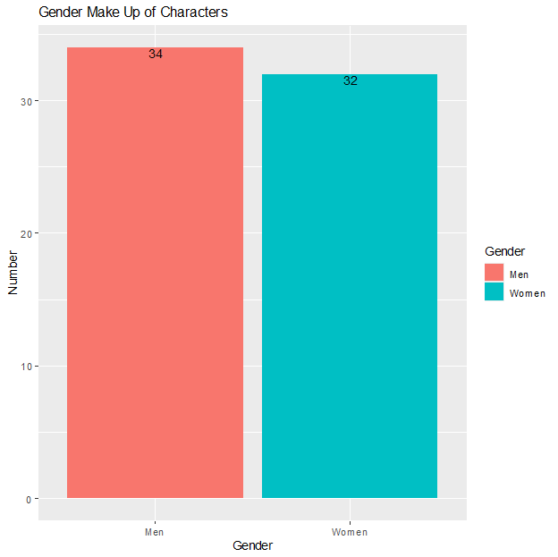
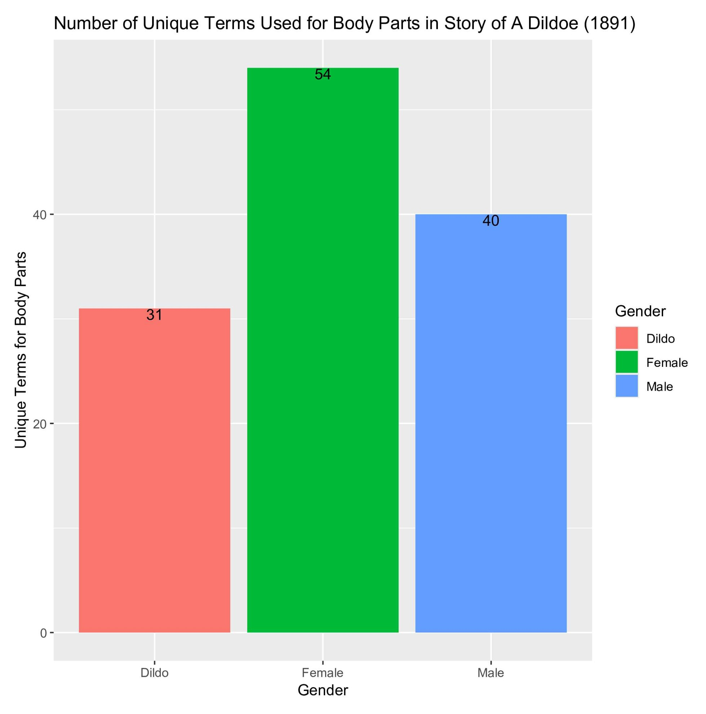
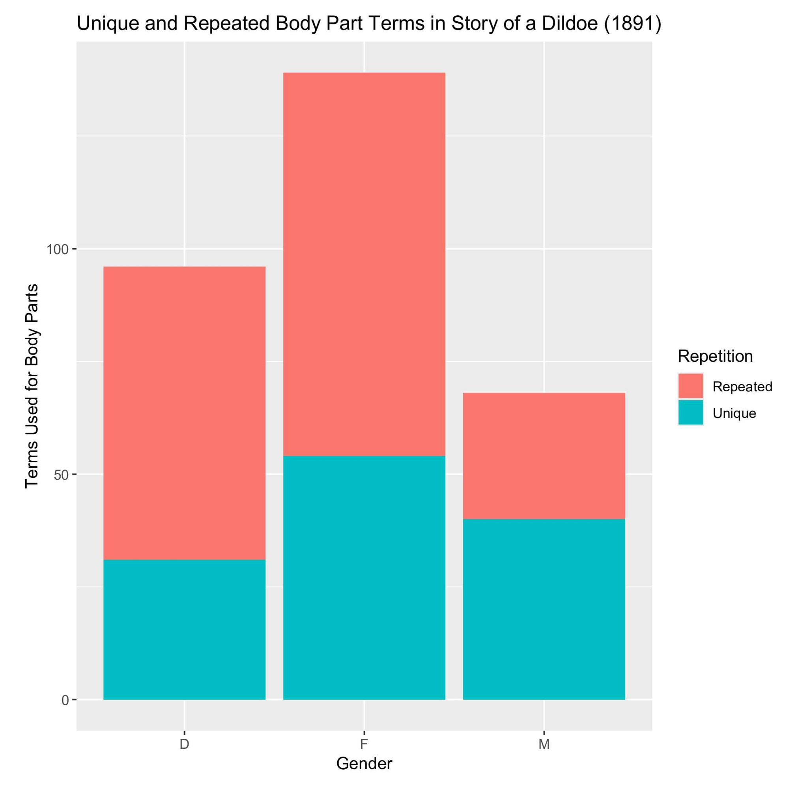
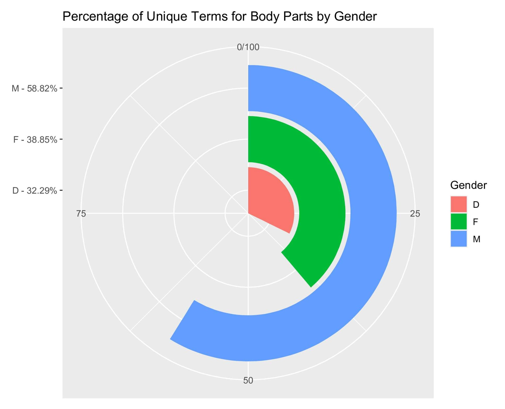
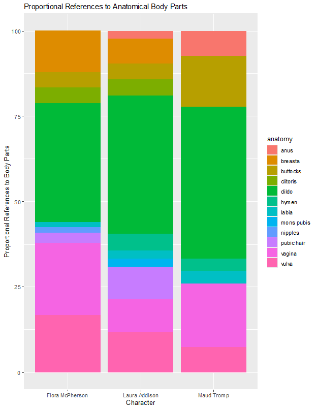
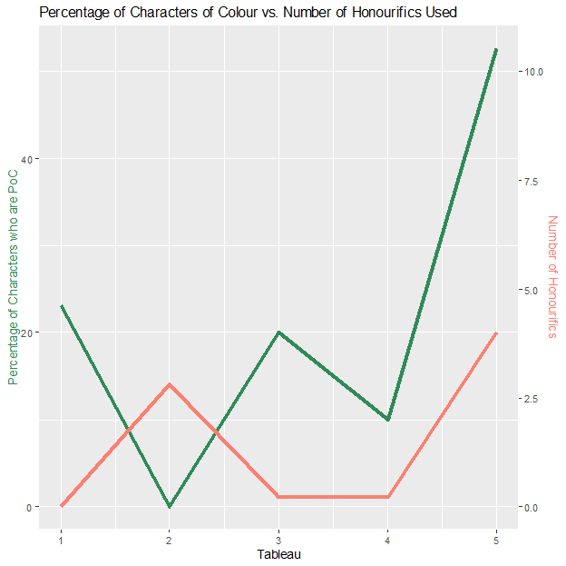
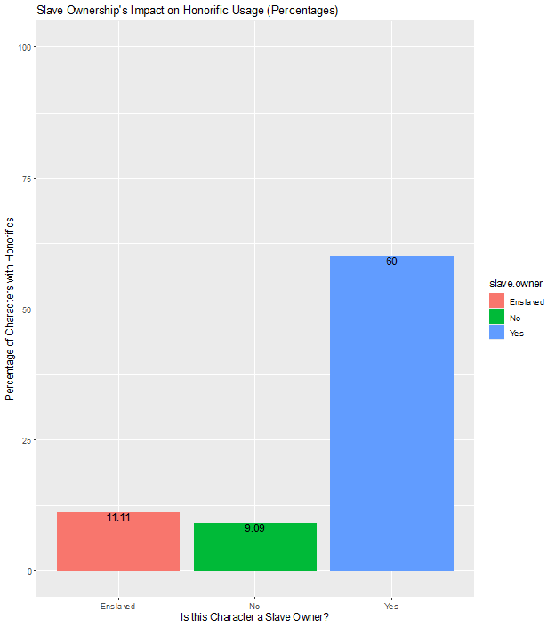

Many of the visualizations on this page were initially created as part of the requirements for DH520, taught by Dr. Harvey Quamen at the University of Alberta in Winter 2026.

Associated data files: data/adjectives_edges.csv, data/adjectives_nodes.csv

Associated data files: data/honorific_count_gender_no_dildo.csv

Associated data files: data/unique_genital_terms.csv

Associated data files: data/repetition.csv

Associated data files: data/percentage_of_unique_terms.csv

Associated data files: data/main_char_anatomy_counts.csv

Associated data files: data/honourific_by_tab.csv

Associated data files: data/honorific_count_slavery